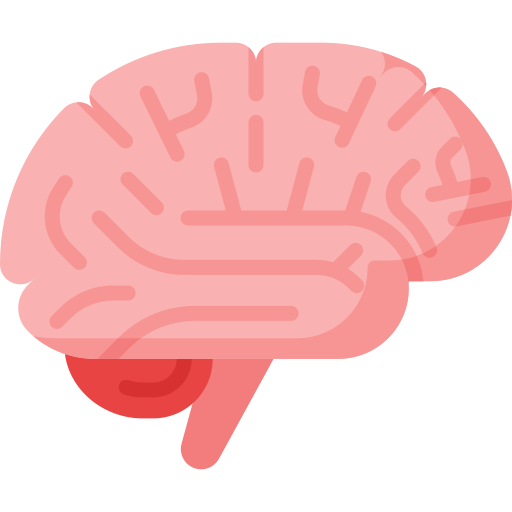
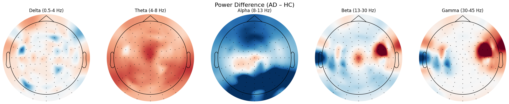
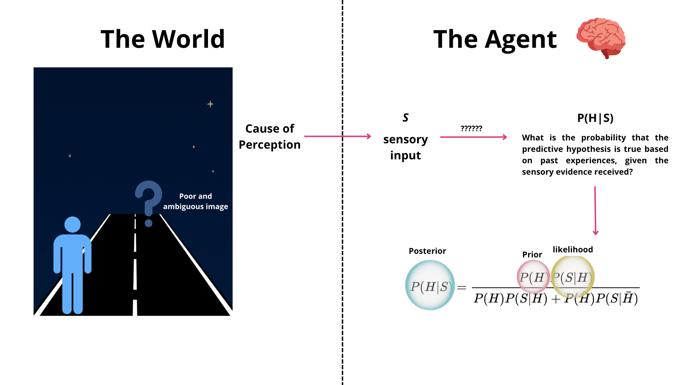
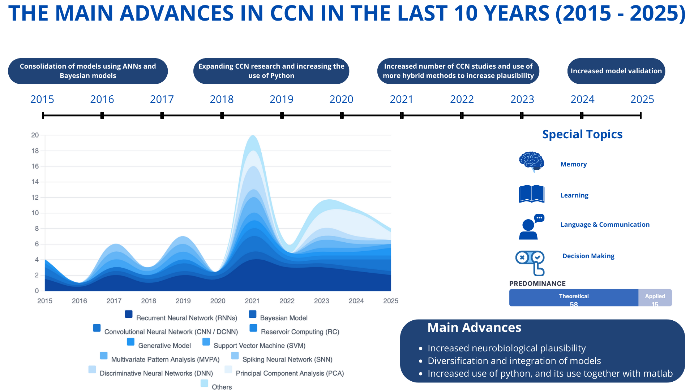
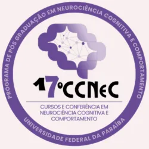
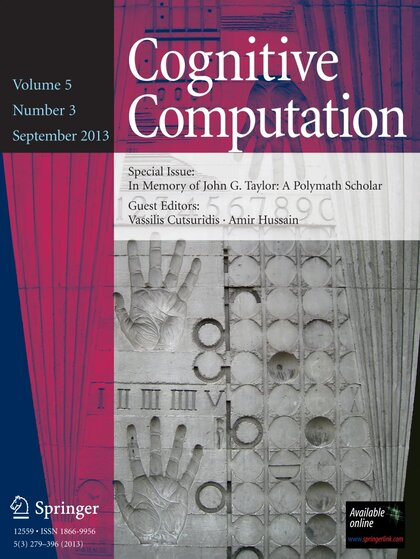
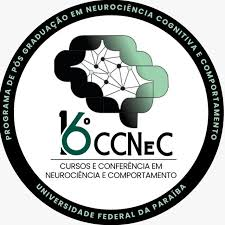
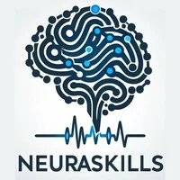

NUTES | UEPB
I am an undergraduate Psychology student at the State University of Paraíba (UEPB) and a researcher at the Center for Strategic Health Technologies (NUTES), where I assist in leading the NeuroComp research line on Memory Applied to Aging. Bridging cognitive psychology and computational neuroscience, I currently combine EEG and machine learning to investigate predictive markers for Alzheimer and MCI. As a long-term goal, I aim to develop neuroplausible memory decoding models that translate complex neural connectivity into clinical insights for aging.
Research Interests
 | Computational Neuroscience Signal Processing and Brain Decoding. |
| BCI & IA Developing Brain-Computer Interfaces. | |
| Health Tech Alzheimer’s and MCI classification models. |
Education
| B.S. in Psychology State University of Paraíba | 2024 - Present | |
| Undergraduate Researcher NUTES / NeuroComp Research Group |
Featured Research Projects

Machine Learning Benchmark for AD/MCI
Benchmarking Machine Learning and Deep Learning models for Alzheimer's classification based on EEG signals and Cognitive Tasks.
Jan 2026 – Present
Predictive Processing Guide
A didactic guide to Predictive Processing, integrating thermodynamics and Bayesian inference with an open-source Python implementation.
Oct 2025 – Present
CCN Scoping Review
Mapping a decade of evolution in computational cognitive neuroscience, a comprehensive scope review synthesizing advances, paradigm shifts, and the new frontiers of CCN.
March 2025 – Nov 2025Featured Publications



Software Registrations
INPI
Awards & Honors
“Individualizing the Pre-Ictal Window for Machine Learning-Based Epileptic Seizure Prediction: A Study on Clinical and Wearable-Device EEG Data”
“Explainable Machine Learning for Alzheimer's Disease Detection via Resting-State Electroencephalography”
News

INPI computer program registration certificate, BR512026008531-4

Receiving the award at the 17th CCNEC

Explainable ML for Alzheimer's detection from resting-state EEG (2nd place)

Presenting the poster during the session


Accepted in Cognitive Computation (Springer Nature)

Setting up the wearable EEG headset with a participant

Real-time EEG signal check during a recording session

EEG data collection with the NeuroComp team

NeuroSeizure-EEG registered as software at INPI
NeuroSeizure-EEG, our Python software that analyzes the EEG pre-ictal period to predict epileptic seizures, received its computer program registration from the Brazilian National Institute of Industrial Property (INPI). The registration number is BR512026008531-4, and the rights holder is UEPB.
1st and 2nd place for Best Work at the 17th CCNEC
Our group won 1st and 2nd place for Best Work at the 17th CCNEC (Sep 15–17, 2026), among 80 competing researchers. First place went to our work on individualizing the pre-ictal window for epileptic seizure prediction, where I am a co-author. Second place went to my first-author work on explainable machine learning for Alzheimer’s detection from resting-state EEG. The NeuroComp group presented six works at the event.

Scoping review accepted in Cognitive Computation
Our article Understanding Advances in Computational Cognitive Neuroscience Over the Past Ten Years: A Scoping Review was accepted in Cognitive Computation (Springer Nature). It maps a decade of advances, paradigm shifts and open frontiers in the field. The article is in press, and the preprint is available on PsyArXiv until then.
Launch of the Cidade Madura extension project
We started data collection for Cidade Madura, an extension project on cognitive monitoring of older adults in community settings. At least 30 older adults will go through two cycles of cognitive assessment and wearable-EEG monitoring. The project also includes at least six educational and cognitive-stimulation activities for about 60 participants, focused on healthy aging and self-care.
Advanced Coursework
Medical Neuroscience
Institution:
Duke University
The Neurobiology of Everyday Life
Institution:
The University of Chicago

EEG/ERP Analysis with Python and MNE
Institution:
Neura Skills
Neuroscience for Computational Neuroscience
Institution:
State University of Paraíba
Python for Computational Neuroscience
Institution:
State University of Paraíba
EEG Analysis with Python and Machine Learning
Institution:
State University of Paraíba